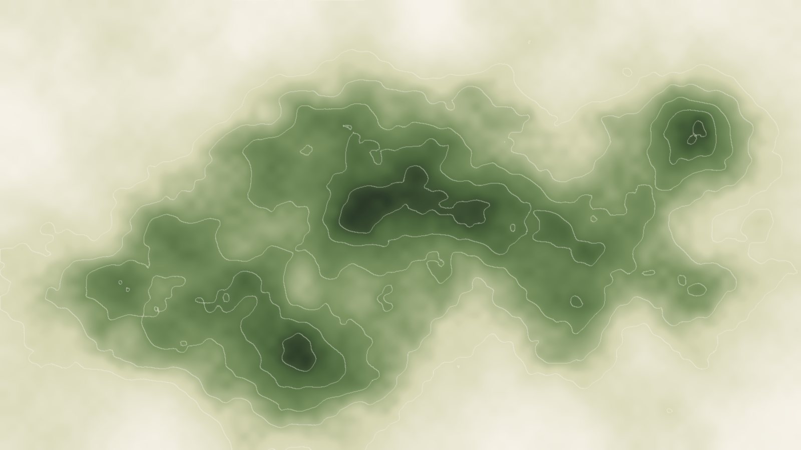

Espacio y movimiento, cuantificados
Del hábitat idóneo a la acción de conservación
01
¿Dónde podrían vivir?
Los modelos de distribución convierten censos, ciencia ciudadana y clima en un mapa de hábitat idóneo. Dicen dónde podría persistir una especie, no si llegará hasta allí.
02
¿Adónde van en realidad?
Las recuperaciones de anillas y el seguimiento muestran cuánto se mueven los individuos y cuánto varía entre ellos. La dispersión es el eslabón que falta entre idoneidad y ocupación.
03
¿Dónde marca la diferencia actuar?
Unir las dos cosas identifica los corredores, refugios y áreas prioritarias donde actuar ahora evita pérdidas después. Esa es la pregunta para la que construimos nuestros modelos.
Ilustración: trayectorias simuladas sobre una superficie de idoneidad sintética.

IdoneidadMovimientoÁreas prioritarias